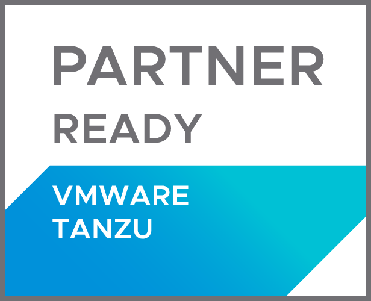

Overview¶
VMware Tanzu Kubernetes Grid Integrated Engine (TKGI) is supported by the HPE CSI Driver for Kubernetes.
Partnership¶
VMware and HPE have a long standing partnership across each of the product portfolios. Allowing TKGI users to access persistent storage with the HPE CSI Driver accelerates stateful workload performance, scalability and efficiency.
Learn more about the partnership and enablement on the VMware Marketplace.
Prerequisites¶
It's important to verify that the host OS and Kubernetes version is supported by the HPE CSI Driver.
- Only iSCSI is supported (learn why)
- Ensure "Enable Privileged Containers" is ticked in the TKGI cluster deployment plan
- Verify versions in the Compatibility and Support table
Installation¶
It's highly recommended to use the Helm chart to install the CSI driver as it's required to apply different "kubeletRootDir" than the default for the driver to start and work properly.
Example workflow.
helm repo add hpe-storage https://hpe-storage.github.io/co-deployments/
kubectl create ns hpe-storage
helm install my-hpe-csi-driver hpe-storage/hpe-csi-driver -n hpe-storage \
--set kubeletRootDir=/var/vcap/data/kubelet
Seealso
Learn more about the supported parameters of the Helm chart on ArtifactHub.
Post Install Steps¶
For TKGI workloads to make use of persistent storage from HPE, a supported backend needs to be configured along with a StorageClass. These procedures are generic regardless of Kubernetes distribution being used.
- Go ahead and add an HPE storage backend